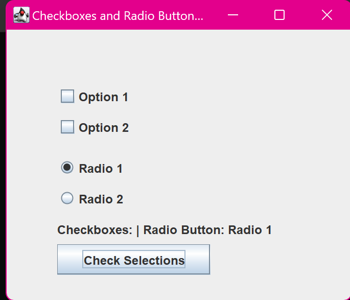

8. Java Program to Create Check Boxes and Radio Buttons
import javax.swing.JFrame;
import javax.swing.JCheckBox;
import javax.swing.JRadioButton;
import javax.swing.ButtonGroup;
import javax.swing.JLabel;
import javax.swing.JButton;
import java.awt.event.ActionListener;
import java.awt.event.ActionEvent;
class main {
public static void main(String[] args) {
JFrame frame = new JFrame("Checkboxes and Radio Buttons
Example");
// Checkboxes
JCheckBox checkBox1 = new JCheckBox("Option 1");
JCheckBox checkBox2 = new JCheckBox("Option 2");
checkBox1.setBounds(50, 50, 150, 30);
checkBox2.setBounds(50, 80, 150, 30);
// Radio Buttons
JRadioButton radioButton1 = new JRadioButton("Radio 1");
JRadioButton radioButton2 = new JRadioButton("Radio 2");
radioButton1.setBounds(50, 120, 150, 30);
radioButton2.setBounds(50, 150, 150, 30);
// Group the radio buttons so only one can be selected at a
time
ButtonGroup radioGroup = new ButtonGroup();
radioGroup.add(radioButton1);
radioGroup.add(radioButton2);
// Label to display selected options
JLabel label = new JLabel("Selected Options: None");
label.setBounds(50, 180, 250, 30);
// Button to check and display the selected states
JButton button = new JButton("Check Selections");
button.setBounds(50, 210, 150, 30);
button.addActionListener(new ActionListener() {
public void actionPerformed(ActionEvent e) {
// Get selected checkboxes
String checkBoxStatus = "Checkboxes: ";
if (checkBox1.isSelected()) {
checkBoxStatus += "Option 1 ";
}
if (checkBox2.isSelected()) {
checkBoxStatus += "Option 2 ";
}
// Get selected radio button
String radioButtonStatus = "Radio Button: ";
if (radioButton1.isSelected()) {
radioButtonStatus += "Radio 1";
} else if (radioButton2.isSelected()) {
radioButtonStatus += "Radio 2";
} else {
radioButtonStatus += "None";
}
// Update label with the selections
label.setText(checkBoxStatus + "| " +
radioButtonStatus);
}
});
// Add components to the frame
frame.add(checkBox1);
frame.add(checkBox2);
frame.add(radioButton1);
frame.add(radioButton2);
frame.add(label);
frame.add(button);
// Frame settings
frame.setLayout(null);
frame.setSize(350, 300);
frame.setDefaultCloseOperation(JFrame.EXIT_ON_CLOSE);
frame.setVisible(true);
System.out.println("Program is ready to handle checkboxes and
radio buttons.");
}
}
